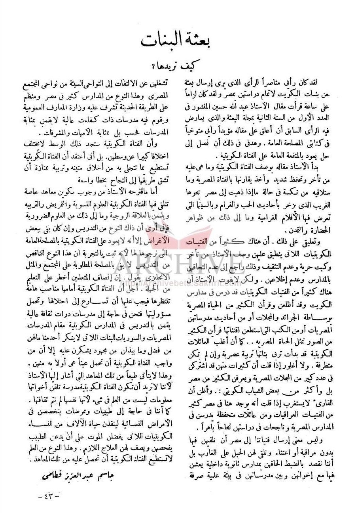
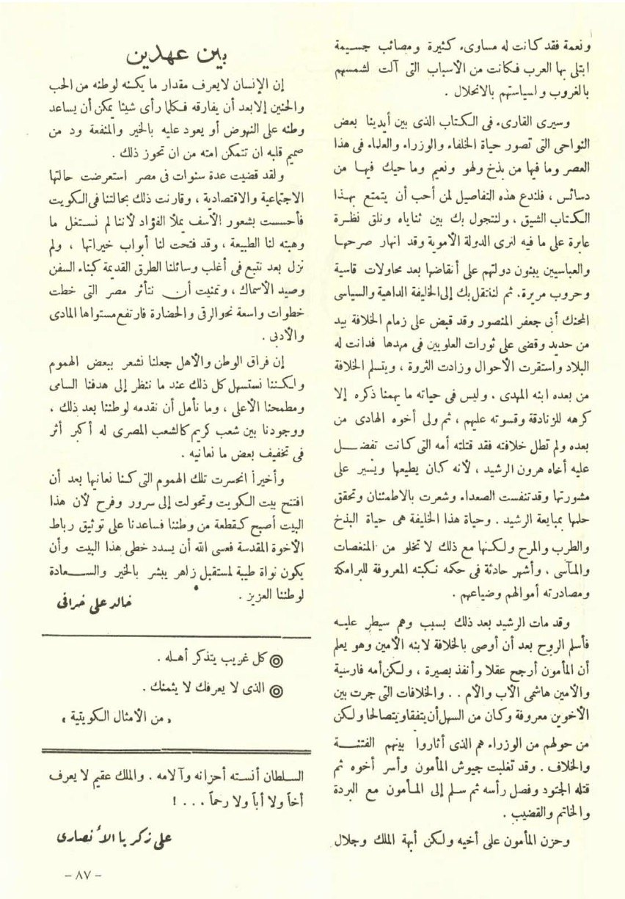
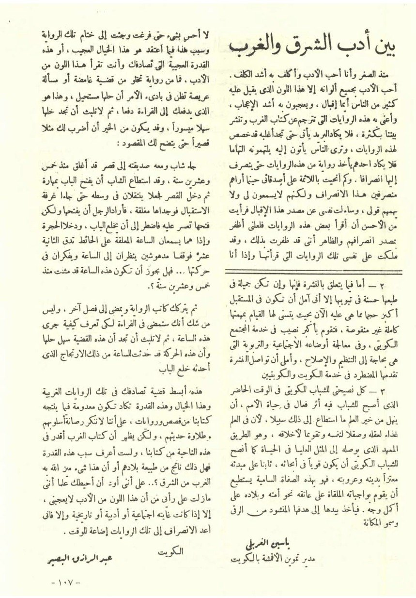
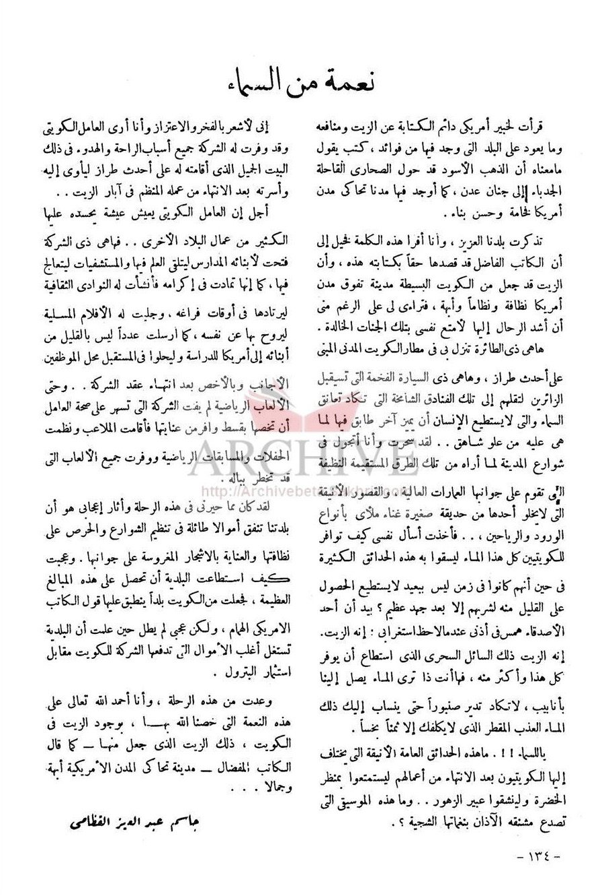
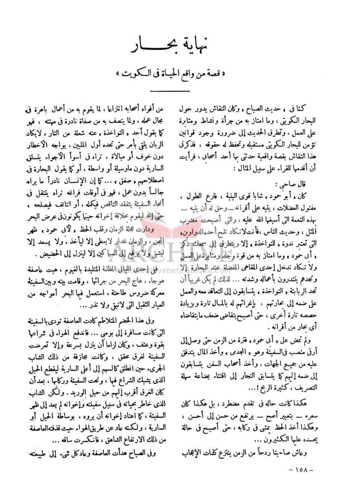
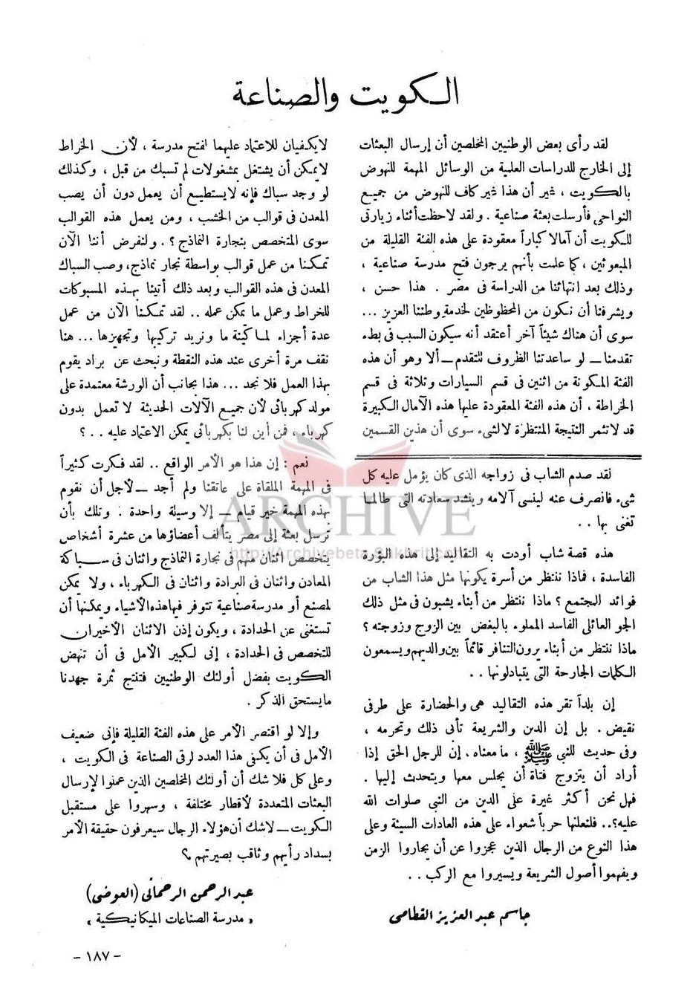
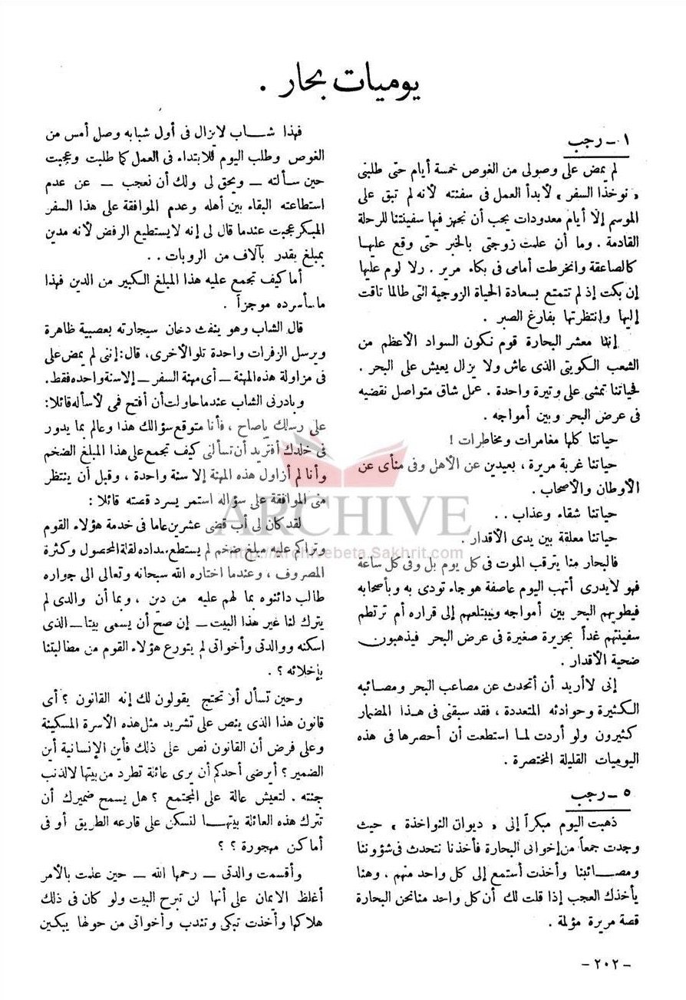
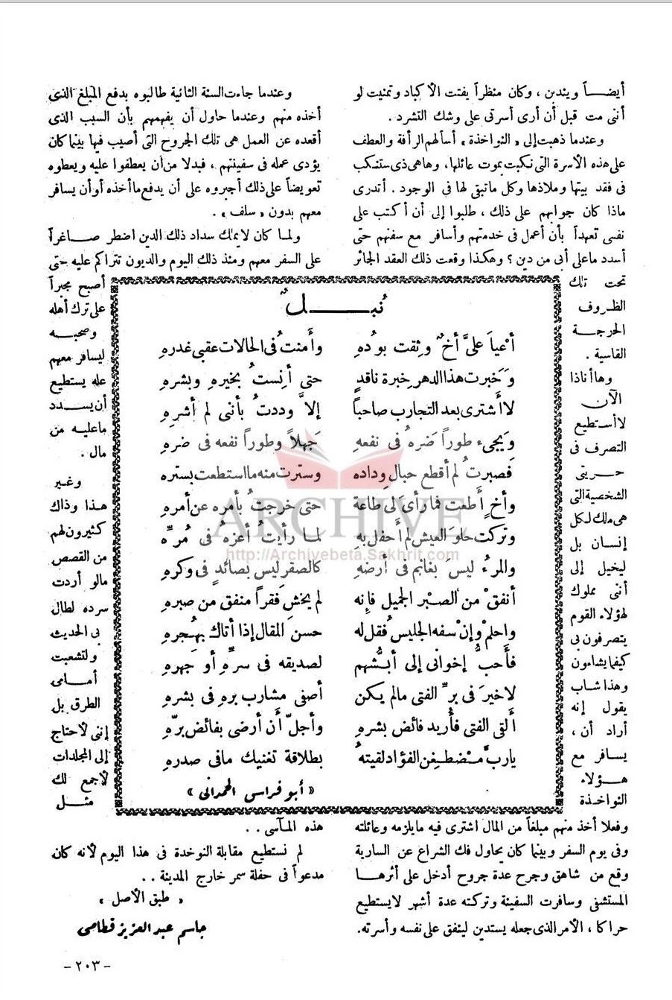
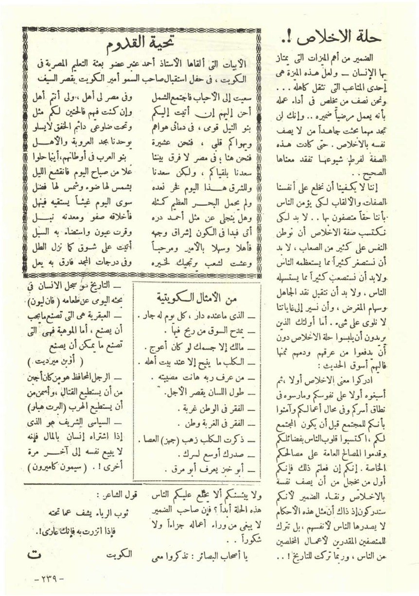

١٩٤٨م، البعثة، المجلد الثاني · صفحات من مجلة البعثة، المجلد الثاني (١٩٤٨م)، أعاد طبعها مركز البحوث والدراسات الكويتية، الكويت، ١٩٩٧
كتابات جاسم القطامي في البعثة عام ١٩٤٨: بعثة البنات، والكويت والصناعة، وقصص البحار
ما هي
مقالات بتوقيع جاسم عبدالعزيز القطامي حين كان طالبا في بيت الكويت بالقاهرة. ١. «بعثة البنات» (فبراير ١٩٤٨م) يدعو فيها إلى إرسال الفتيات الكويتيات للدراسة في الخارج. ٢. «نعمة من السماء» (يوليو ١٩٤٨م) و«الكويت والصناعة» (سبتمبر ١٩٤٨م) عن مستقبل الكويت بعد النفط. ٣. وقصصه البحرية عن حياة البحارة الكويتيين: «نهاية بحار» (أغسطس ١٩٤٨م)، و«زواج بحار» (سبتمبر ١٩٤٨م)، و«يوميات بحار» في ثلاث حلقات (أكتوبر ونوفمبر وديسمبر ١٩٤٨م).
أهميتها
كتابات جاسم الأولى منشورة باسمه الكامل، ومنها القصص البحرية التي عدها الدارسون من رواد القصة القصيرة الكويتية.
صور الصفحات













المصادر
البعثة، المجلد الثاني (١٩٤٨م)، أعاد طبعها مركز البحوث والدراسات الكويتية، الكويت، ١٩٩٧، ص ٤٣ و٨٧ و١٠٧ و١٣٤ و١٥٨ و١٥٩ و١٨٦ و١٨٧ و٢٠٢ و٢٠٣ و٢٢٩ و٢٣٣ و٢٥٤ و٢٥٥
كيف كُتب هذا النص: مصورة من الصفحات المطبوعة. الصفحات ٨٧ و١٠٧ و٢٢٩ مذكورة باسم جاسم في فهرس المجموعة، ولا يظهر اسمه مطبوعا عليها.
افتح في الموقع التفاعلي